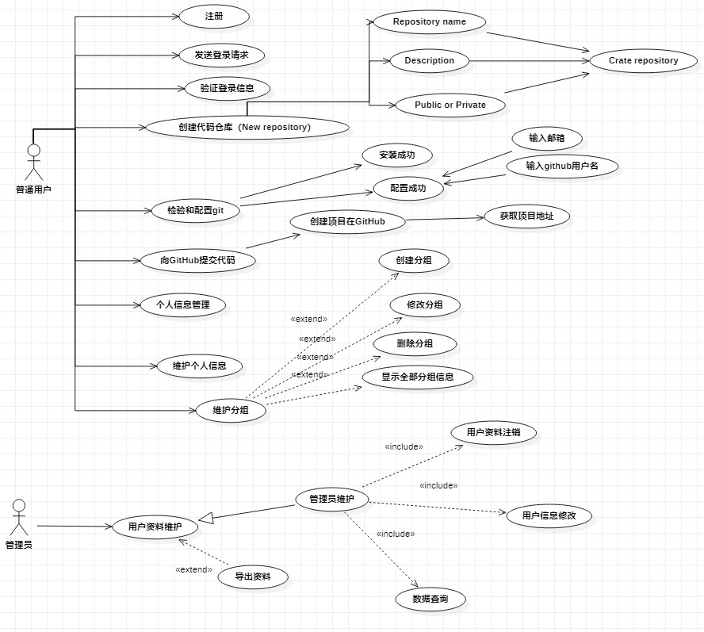

用例文档
用例名称:Repositories(仓库)项目代码托管。
用例编号:RPCH
用例描述:该用例描述一个在github上的项目通过ssh复制到PyCharm、IDEA等类似软件上的行为。
触发器:该项目在github上提交到软件上时，用例触发。
前置条件:普通用户需要到github上完成登录。
后置条件:找到需要的项目然后搜索，如果开源，则下载。
基本事件流:
1.参与者将github找到自己所需的项目通过ssh复制到系统（PyCharm）的URL中
2.编辑仓库信息；
3.点击创建仓库；
4.将代码数据等...提交至本地
5.获取克隆地址，并拉去代码；
6.远程操作,将PyCharm、IDEA上的代码clone到github上；
7.获取远程仓库授权（github+gitee）
8.获取gitee授权；
9.克隆项目并提交代码。
扩展事件流：
A-4 提交至暂存区,但未提交至本地仓库(add 了,没commit)；
查看状态: git status
删除提交至暂存区的某个文件:git reset HEAD filename
删除提交至暂存区的所有文件:git reset HEAD
A-6 提交至本地仓库但未推至远程仓库；
查看提交日志: git log
回滚本地仓库: git reset --hard commit_id
A-7 推送至远程仓库实现回滚；
查看提交日志: git log
回滚本地仓库: git reset --hard commit_id
强制推送到远程仓库:git push origin HELD --force
结论:当参与者收到系统发送的任务运行成功或者其他异常信息的时候，用例结束。
数据需求:D-1 查看和生成SSH key,普通用户的账户名，上传文件--->上传代码、上传文档、上传图片。
业务规则:只有当仓库创建完成后才可以执行后面的操作
用例模型
